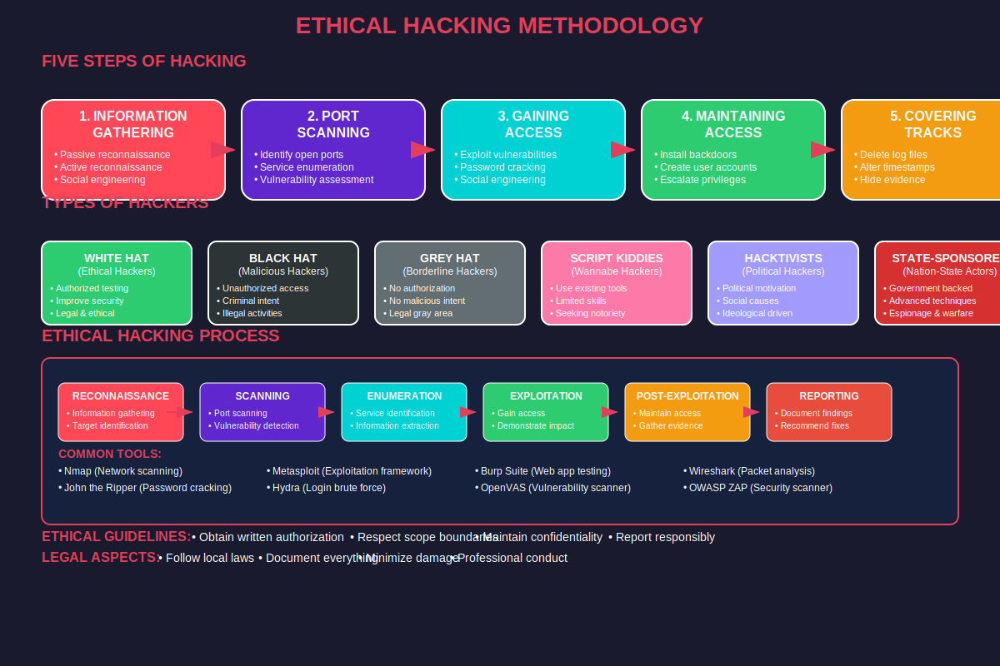

Ethical Hacking Fundamentals
Legitimate Security Testing and Assessment
Understanding the Principles and Practices of White Hat Security

Ethical Hacking Definition
Ethical Hacking is the authorized practice of bypassing system security to identify potential data breaches and threats in a network, performed by certified professionals to improve security posture.
Key Principles:
- Authorization: Explicit written permission from system owners
- Scope Definition: Clear boundaries of what can be tested
- Legal Compliance: Adherence to all applicable laws
- Professional Ethics: Following industry standards and codes
- Responsible Disclosure: Proper reporting of vulnerabilities
- Minimal Impact: Avoiding damage to systems or data
Alternative Names: White hat hacking, penetration testing, security assessment, authorized security testing
Ethical vs Malicious Hacking
Ethical Hacking:
- Intent: Improve security posture
- Authorization: Written permission required
- Scope: Defined testing boundaries
- Disclosure: Report findings to client
- Damage: Minimize or avoid completely
- Legal Status: Fully legal and sanctioned
- Documentation: Comprehensive reports
- Follow-up: Help remediate issues
Malicious Hacking:
- Intent: Personal gain or damage
- Authorization: No permission
- Scope: Unlimited and uncontrolled
- Disclosure: Hidden from victims
- Damage: Often causes significant harm
- Legal Status: Criminal activity
- Documentation: Cover tracks
- Follow-up: Exploit vulnerabilities
Golden Rule: Never perform security testing without explicit written authorization from the system owner
Types of Ethical Hacking
Penetration Testing:
- Simulated cyber attacks
- Specific system targeting
- Time-bound assessments
- Goal-oriented testing
- Detailed vulnerability exploitation
- Proof of concept demonstrations
Vulnerability Assessment:
- Systematic vulnerability identification
- Automated scanning tools
- Risk classification
- Comprehensive coverage
- Regular scheduled assessments
- Compliance verification
Red Team Exercises:
- Full-scope adversary simulation
- Multi-vector attack campaigns
- Social engineering integration
- Physical security testing
- Long-term engagement
- Organizational preparedness testing
Additional Types:
- Bug Bounty Programs: Crowdsourced vulnerability discovery
- Security Audits: Compliance and policy verification
- Code Review: Source code security analysis
- Configuration Assessment: Security configuration review
Penetration Testing Approaches
Black Box Testing:
- Knowledge: No prior information
- Approach: External attacker simulation
- Time: Longer duration needed
- Cost: More expensive
- Reality: Most realistic scenario
- Coverage: May miss internal vulnerabilities
White Box Testing:
- Knowledge: Full system information
- Approach: Internal perspective
- Time: Shorter duration
- Cost: More cost-effective
- Reality: Insider threat simulation
- Coverage: Comprehensive testing
Gray Box Testing:
- Knowledge: Partial information
- Approach: Hybrid methodology
- Time: Moderate duration
- Cost: Balanced approach
- Reality: Privileged user scenario
- Coverage: Focused and efficient
Selection Criteria:
• Black Box: When testing external attack surface
• White Box: When comprehensive coverage needed
• Gray Box: When balancing realism with efficiency
Ethical Hacking Methodology
Systematic Approach: Ethical hackers follow structured methodologies to ensure comprehensive and professional testing.
Standard Penetration Testing Phases:
1. Planning and Preparation:
• Define scope and objectives
• Obtain written authorization
• Gather preliminary information
• Set up testing environment
2. Reconnaissance:
• Passive information gathering
• OSINT collection
• Target identification
• Attack surface mapping
3. Scanning and Enumeration:
• Active information gathering
• Port and service discovery
• Vulnerability identification
• System fingerprinting
4. Vulnerability Analysis:
• Risk assessment and prioritization
• Exploit research and development
• Attack vector planning
• Impact analysis
5. Exploitation:
• Controlled vulnerability exploitation
• Proof of concept development
• Access validation
• Privilege escalation testing
6. Post-Exploitation:
• Persistence testing
• Lateral movement assessment
• Data collection (authorized)
• Impact documentation
7. Reporting:
• Comprehensive vulnerability documentation
• Risk assessment and business impact
• Remediation recommendations
• Executive and technical reports
Legal and Ethical Framework
Legal Requirements: Ethical hackers must operate within strict legal boundaries and professional standards.
Legal Prerequisites:
- Written Authorization: Signed contracts and SOWs
- Scope Definition: Clear testing boundaries
- Legal Compliance: Local and international laws
- Insurance Coverage: Professional liability protection
- Data Protection: GDPR, HIPAA compliance
- Chain of Custody: Evidence handling procedures
Ethical Guidelines:
- Confidentiality: Protecting client information
- Integrity: Honest and accurate reporting
- Objectivity: Unbiased assessment
- Professional Competence: Maintaining skills
- Due Care: Avoiding system damage
- Responsible Disclosure: Proper vulnerability reporting
Professional Standards:
- EC-Council Code of Ethics: CEH certification requirements
- SANS GIAC Ethics: GPEN certification standards
- OWASP Testing Guide: Web application testing standards
- PTES: Penetration Testing Execution Standard
Rules of Engagement (RoE)
Rules of Engagement: Formal agreement defining the parameters, constraints, and procedures for ethical hacking activities.
Essential RoE Components:
Scope and Boundaries:
• Target systems and networks
• IP address ranges and domains
• Applications and services
• Physical locations (if applicable)
• Out-of-scope systems and restrictions
Testing Constraints:
• Acceptable testing times and windows
• Traffic volume limitations
• Data handling restrictions
• Social engineering boundaries
• Physical access limitations
Communication Protocols:
• Emergency contact procedures
• Status reporting requirements
• Incident escalation process
• Client notification triggers
Deliverables and Timeline:
• Testing phases and milestones
• Report formats and contents
• Presentation requirements
• Final deliverable specifications
Industry Standards and Frameworks
PTES (Penetration Testing Execution Standard):
- Pre-engagement interactions
- Intelligence gathering
- Threat modeling
- Vulnerability analysis
- Exploitation
- Post-exploitation
- Reporting
OWASP Testing Guide:
- Web application security testing
- Configuration and deployment
- Identity management testing
- Authentication testing
- Authorization testing
- Session management testing
- Input validation testing
NIST SP 800-115:
- Technical guide to information security
- Testing and assessment planning
- Testing phase execution
- Post-testing activities
- Federal compliance requirements
Additional Frameworks:
- ISSAF: Information Systems Security Assessment Framework
- OSSTMM: Open Source Security Testing Methodology Manual
- SANS: Various penetration testing methodologies
- MITRE ATT&CK: Adversarial tactics and techniques framework
Ethical Hacking Tool Categories
Reconnaissance Tools:
- Nmap: Network discovery and scanning
- Maltego: Link analysis and data mining
- theHarvester: Email and subdomain gathering
- Shodan: Internet-connected device search
- Google Dorking: Advanced search techniques
Vulnerability Assessment:
- Nessus: Comprehensive vulnerability scanner
- OpenVAS: Open source vulnerability scanner
- Qualys: Cloud-based vulnerability management
- Rapid7 Nexpose: Vulnerability management solution
- Nikto: Web server scanner
Exploitation Tools:
- Metasploit: Exploitation framework
- Burp Suite: Web application testing
- SQLmap: SQL injection testing
- Cobalt Strike: Adversary simulation
- Empire: PowerShell post-exploitation
Tool Selection Criteria:
• Authorized and legitimate tools only
• Appropriate for testing scope
• Minimal risk of system damage
• Proper licensing and usage rights
• Professional and industry-accepted tools
Penetration Testing Reporting
Professional Reporting: Comprehensive documentation is crucial for communicating findings and enabling effective remediation.
Executive Summary:
- Business Impact: Risk to organization
- Key Findings: Critical vulnerabilities
- Risk Metrics: Quantified security posture
- Recommendations: High-level remediation strategy
- Investment Priorities: Security budget allocation
Technical Report:
- Methodology: Testing approach and scope
- Detailed Findings: Vulnerability descriptions
- Proof of Concept: Exploitation evidence
- Risk Assessment: CVSS scores and impact
- Remediation Steps: Specific fix procedures
Report Structure Template:
1. Executive Summary: Business-focused overview
2. Methodology: Testing approach and standards
3. Scope: Systems and boundaries tested
4. Findings Summary: Vulnerability statistics
5. Detailed Findings: Technical vulnerability details
6. Risk Assessment: Impact and likelihood analysis
7. Recommendations: Prioritized remediation plan
8. Appendices: Supporting evidence and references
Ethical Hacking Career Development
Essential Skills:
- Technical Knowledge: Networks, systems, applications
- Security Expertise: Vulnerabilities and exploits
- Tool Proficiency: Security testing tools
- Programming: Scripting and automation
- Communication: Report writing and presentation
- Legal Awareness: Compliance and ethics
Professional Certifications:
- CEH: Certified Ethical Hacker (Entry level)
- OSCP: Offensive Security Certified Professional
- GPEN: SANS GIAC Penetration Tester
- CPENT: Certified Penetration Testing Professional
- CISSP: Certified Information Systems Security Professional
Career Progression:
- Junior Penetration Tester: Entry-level testing role
- Senior Penetration Tester: Advanced testing and methodology
- Lead Penetration Tester: Team leadership and client management
- Security Consultant: Strategic advisory and architecture
- Red Team Lead: Advanced adversary simulation
- Security Architecture: Enterprise security design
Bug Bounty Programs
Bug Bounty: Crowdsourced security testing where organizations reward security researchers for finding and reporting vulnerabilities.
Popular Platforms:
- HackerOne: Leading bug bounty platform
- Bugcrowd: Crowdsourced security testing
- Synack: Hybrid human and AI testing
- Open Bug Bounty: Free vulnerability reporting
- Intigriti: European bug bounty platform
Participant Benefits:
- Financial Rewards: Monetary compensation
- Recognition: Hall of fame and reputation
- Learning: Hands-on security experience
- Networking: Security community connections
- Legal Protection: Safe harbor provisions
Bug Bounty Best Practices:
• Read and follow program rules carefully
• Start with reconnaissance and understanding
• Focus on high-impact vulnerabilities
• Provide detailed and clear reports
• Follow responsible disclosure timelines
• Maintain professional communication
• Respect scope and boundaries
• Avoid duplicate submissions
Continuous Professional Development
Evolving Field: Ethical hacking requires continuous learning due to rapidly changing technology and threat landscapes.
Learning Resources:
- Security conferences and workshops
- Online training platforms
- Capture The Flag (CTF) competitions
- Security research publications
- Vulnerability databases
- Open source security tools
Practical Experience:
- Home lab environments
- Vulnerable applications (DVWA, WebGoat)
- Virtual machine networks
- Cloud-based testing environments
- Bug bounty program participation
- Open source project contributions
Community Engagement:
- Security meetups and groups
- Professional associations
- Online forums and discussions
- Mentorship programs
- Knowledge sharing and blogging
- Speaking at conferences
Key Takeaways
- Ethical hacking requires explicit authorization and legal compliance
- Professional methodologies ensure comprehensive and systematic testing
- Clear rules of engagement define testing boundaries and procedures
- Industry standards and frameworks guide professional practice
- Comprehensive reporting is essential for effective remediation
- Continuous learning is required due to evolving threat landscape
- Bug bounty programs provide opportunities for practical experience
- Professional certifications validate knowledge and credibility
Remember: Ethical hacking is about improving security through authorized, professional, and responsible testing practices that benefit organizations and society
Thank You
Questions & Discussion
Next: Five Steps of Hacking